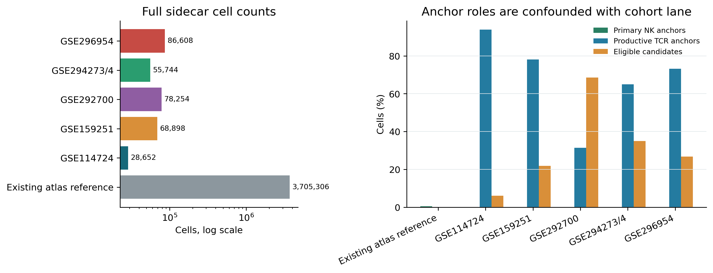
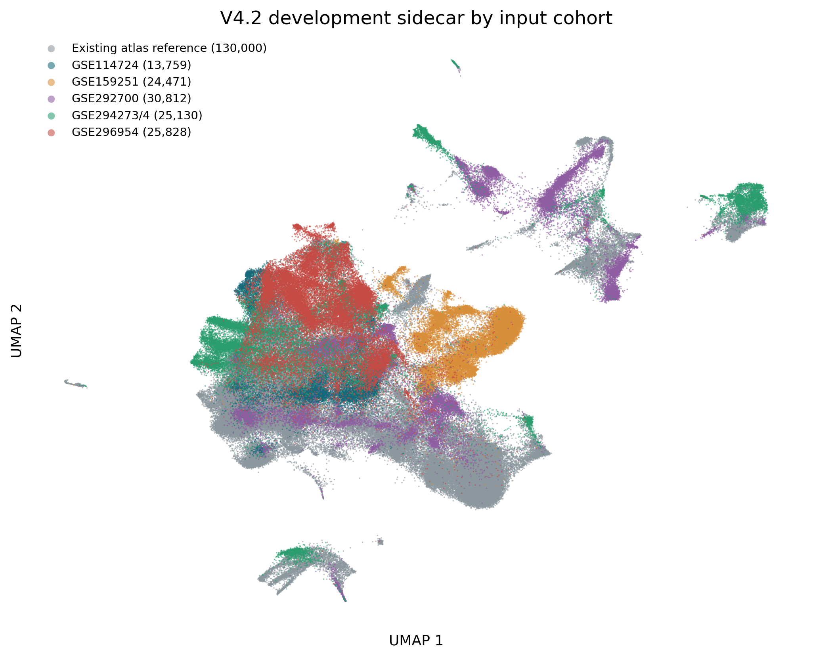
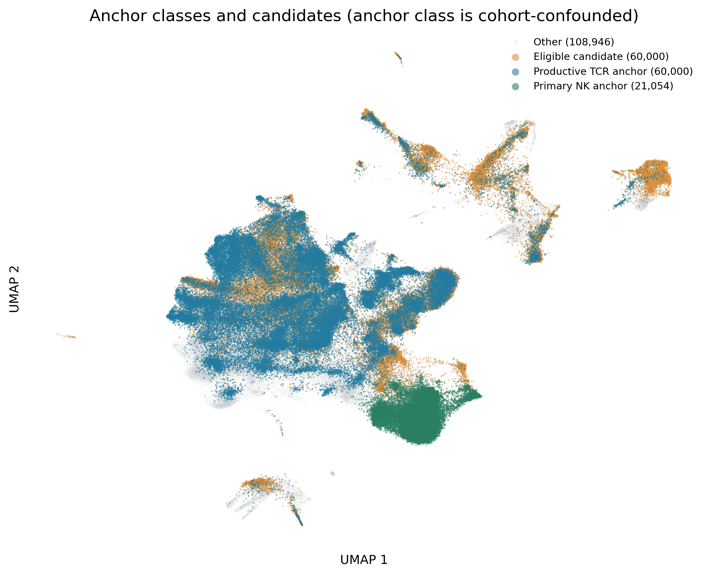
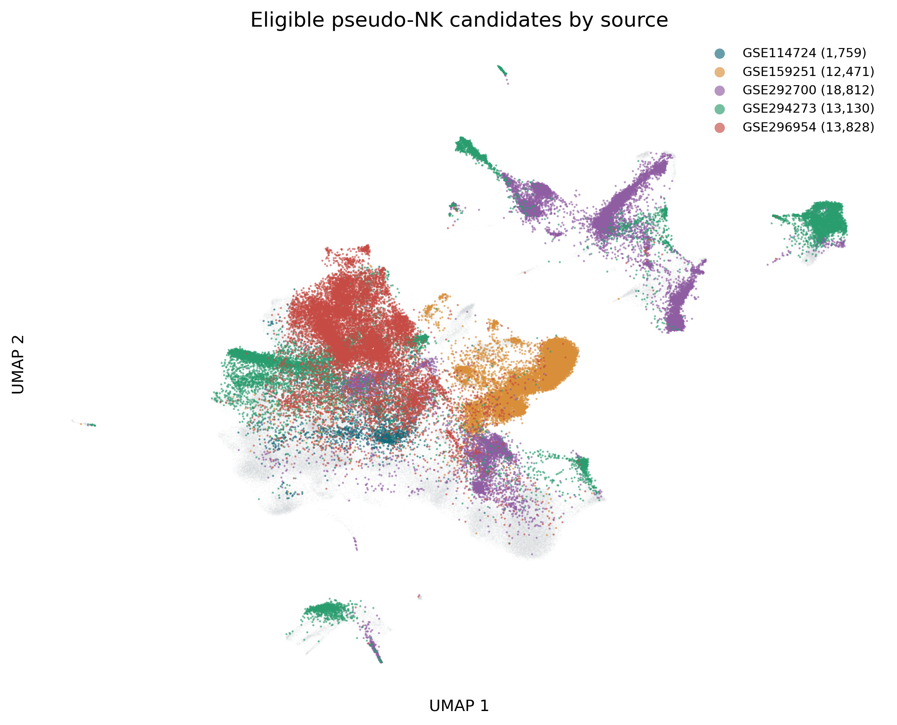
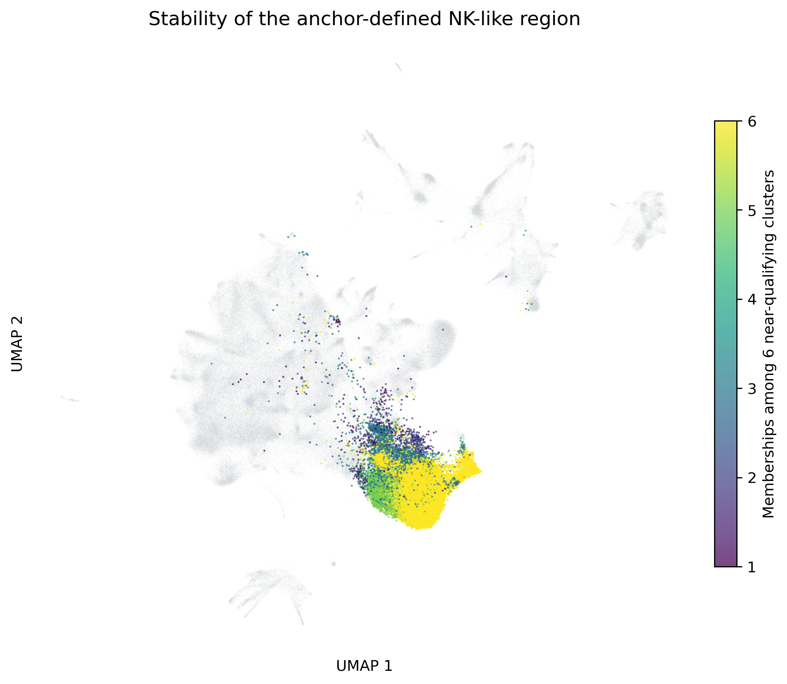
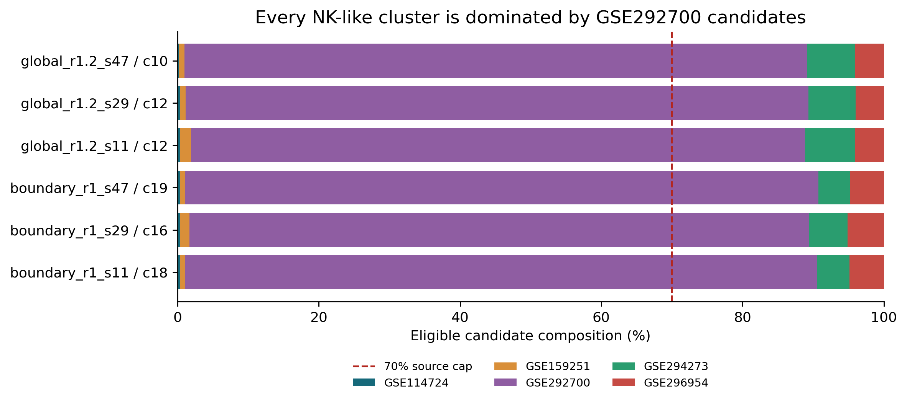
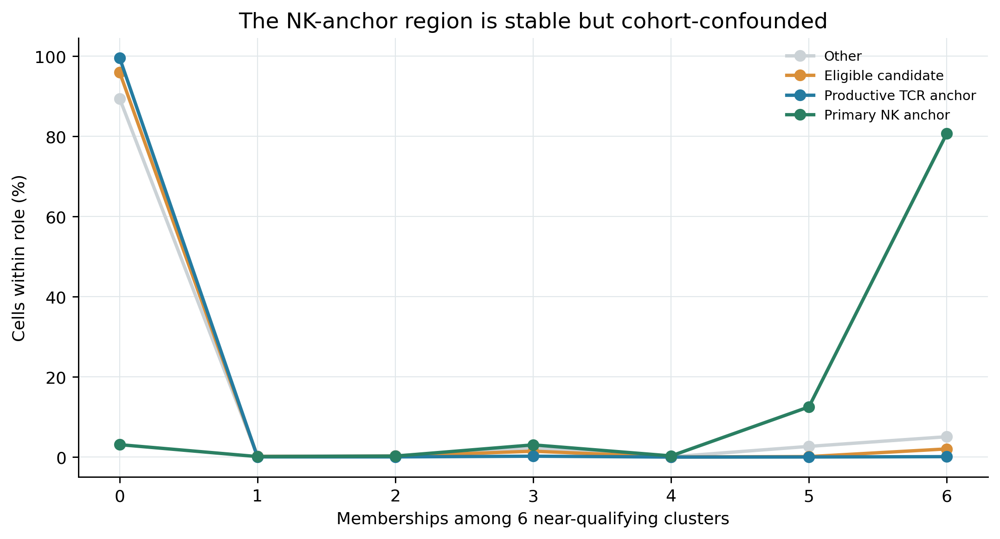
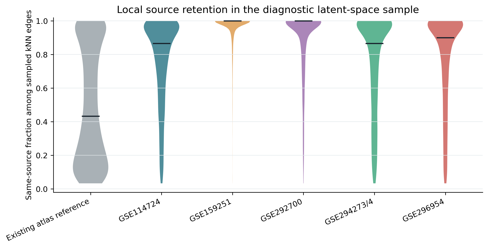

This is a diagnostic visualization of the development-only scVI sidecar. It is not a new canonical atlas milestone and contains no locked validation cohort. Full-data counts use all 4,023,462 cells; UMAP and local-neighbor plots use a deterministic, source-balanced 250,000-cell sample.

| Cohort | Cells | Primary NK | Primary NK % | Productive TCR | Productive TCR % | Eligible candidates | Candidate % |
|---|---|---|---|---|---|---|---|
| Existing atlas reference | 3705306 | 21054 | 0.57% | 0 | 0.00% | 0 | 0.00% |
| GSE114724 | 28652 | 0 | 0.00% | 26893 | 93.86% | 1759 | 6.14% |
| GSE159251 | 68898 | 0 | 0.00% | 53773 | 78.05% | 15125 | 21.95% |
| GSE292700 | 78254 | 0 | 0.00% | 24577 | 31.41% | 53677 | 68.59% |
| GSE294273/4 | 55744 | 0 | 0.00% | 36221 | 64.98% | 19523 | 35.02% |
| GSE296954 | 86608 | 0 | 0.00% | 63405 | 73.21% | 23203 | 26.79% |




All six NK-anchor-rich clusters were low in productive-TCR contamination, but their eligible candidate cells were 86.92%-89.69% GSE292700. This violates the frozen 70% maximum-source rule, so no cluster qualified and no candidate cell received a valid consensus label. Because the two anchor classes come from disjoint cohort lanes, anchor purity alone cannot prove lineage identity.


| Run | Cluster | NK anchors | TCR anchors | NK purity | TCR/cell | Dominant source | Source share |
|---|---|---|---|---|---|---|---|
| global_r1.2_s11 | 12 | 19755 | 328 | 98.37% | 0.10% | GSE292700 | 86.92% |
| global_r1.2_s29 | 12 | 19751 | 308 | 98.46% | 0.10% | GSE292700 | 88.17% |
| global_r1.2_s47 | 10 | 17221 | 263 | 98.50% | 0.12% | GSE292700 | 88.19% |
| boundary_r1_s11 | 18 | 20267 | 799 | 96.21% | 0.20% | GSE292700 | 89.46% |
| boundary_r1_s29 | 16 | 20267 | 801 | 96.20% | 0.20% | GSE292700 | 87.65% |
| boundary_r1_s47 | 19 | 20113 | 813 | 96.11% | 0.21% | GSE292700 | 89.69% |
The same-source-neighbor fraction is a descriptive diagnostic, not a biological pass/fail metric: true tissue, disease, and phenotype differences can legitimately retain source structure. It nevertheless shows where new cohorts remain locally isolated after scVI.

| Cohort | Sample cells | Median same-source | Mean same-source | 90th percentile |
|---|---|---|---|---|
| Existing atlas reference | 130000 | 46.67% | 51.01% | 100.00% |
| GSE114724 | 13759 | 86.67% | 75.32% | 100.00% |
| GSE159251 | 24471 | 100.00% | 95.64% | 100.00% |
| GSE292700 | 30812 | 100.00% | 87.10% | 100.00% |
| GSE294273/4 | 25130 | 86.67% | 73.89% | 100.00% |
| GSE296954 | 25828 | 90.00% | 76.76% | 100.00% |
An NK-anchor-enriched region is visible, but it cannot yet establish NK identity for unlabeled cells. The next iteration must first break the anchor/cohort confounding, then use source-balanced candidate sampling and local anchor-neighborhood propagation with explicit rejection of source-specific neighborhoods. It should not loosen the source cap based on these results.
Classifier fitting performed: no. Source H5AD mutation: none. GitHub publication: disabled until V4 is finished.
7030b28be885b85a4b24ce2223bb16f7c7288a29195f2512bf7bbba330791ccf90e83ec83986358a015885e02e29d06eacf726d928e02b2e90428d5c09947a6320260816a9548ad42e64437334a04ccec8c85d1a2f42c58a10f32a5d9dfa3c223e852b5c